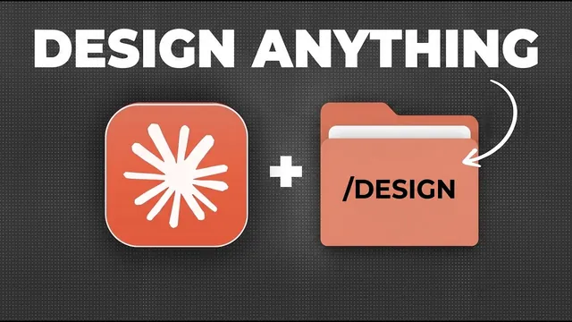

클로드 새 스킬 /design, 디자인이 달라졌다

원본 영상 보기 →
- 캔버스가 아니라 '사전 확정'이 결과의 90%를 만들어요
- 디자인 시스템·템플릿·스킬 3종 세트가 일관성의 축이에요
- 스킬 안에 '자기개선'과 '사람 개입'을 설계로 박아 넣으세요
한 줄 요약
Claude가 새로 낸 디자인 스킬 /design으로 Claude Code와 코워크 안에서 바로 프레젠테이션·웹사이트·소셜 이미지·뉴스레터를 만들 수 있게 됐어요. 그런데 캔버스만 믿고 프롬프트를 던지면 토큰만 날립니다. 벤이 일관된 디자인을 빠르게 뽑기 위해 쓰는 '디자인 시스템 → 템플릿 → 스킬 패키징' 3단계 세팅법을 실제 사례로 정리합니다.
전체 내용 정리
/design은 무엇을 바꿨을까요
/design은 Anthropic이 새로 출시한 기능으로, 코워크나 Claude Code 계정이 있으면 기본으로 쓸 수 있어요.
스킬을 실행하고 디자인을 요청하면 작업 중인 디자인을 눈으로 확인할 수 있는 캔버스가 뜨고, 그 안에서 텍스트·글자 크기·색상·레이아웃을 직접 고칠 수 있습니다. 캔버스는 실시간 아티팩트라서 팀원 누구나 접근해 수정하고 결과물을 바로 다운로드할 수 있고요.
기존 Claude 디자인 도구를 써 봤다면 사실상 같은 기능인데, 달라진 건 이겁니다. 코워크나 Claude Code의 다른 스킬·커넥터를 그대로 유지한 채 디자인 작업까지 한곳에서 처리할 수 있게 됐어요.
활용 범위는 캐러셀·소셜 이미지·인포그래픽 같은 반복 디자인 자동화, 브랜드 가이드에 맞춘 프레젠테이션, 이메일 뉴스레터, 웹사이트까지 사실상 대부분의 디자인 작업입니다.
캔버스만으로는 부족해요 — '느낌적 접근'의 함정
벤은 캔버스 기능 자체는 훌륭하지만 그것만으로는 일관되고 좋은 디자인을 얻을 수 없다고 말합니다.
대부분의 사람은 그가 '느낌적인 접근 방식'이라 부르는 방법으로 시작해요. 간단한 프롬프트 한 줄을 던져 웹사이트 같은 걸 생성하는 거죠.
디자인 작업에서는 이 방식이 올바른 결과를 찾기 위한 끝없는 반복으로 이어집니다. 토큰만 낭비하고 제대로 된 결과물도 못 얻는 좌절로 끝나기 쉬워요. 더 많은 제어권을 주는 새 스킬을 써도 마찬가지고요.
그가 보는 올바른 방법은 프롬프트를 입력하기 전에 디자인의 많은 부분을 미리 확정해 두는 것입니다. 브랜드 가이드·색상·폰트·스타일은 물론 형식·레이아웃·구조, 이상적으로는 문구까지 정의해 두면 단 한 번의 프롬프트로 결과물의 80~90%가 완성되고, 나머지는 캔버스에서 빠르게 마무리하면 돼요.
3단계 시스템
첫째, 디자인 시스템을 갖추세요.
그는 컴퓨터에 '디자인 시스템'이라는 폴더를 만들어 색상·폰트·스타일·자주 쓰는 이미지·로고 가이드를 정리해 두고, 디자인 작업이 필요할 때마다 Claude에게 그 폴더 접근 권한을 줍니다. 그러면 Claude가 브랜드·로고·색상에 즉시 맞춘 디자인을 만들어 줘요.
둘째, 반복 디자인 작업에는 항상 템플릿이나 최소한 예시를 준비하세요.
그래야 Claude가 구조나 레이아웃을 추측하며 반복 작업을 하지 않아요. 예를 들어 캐러셀은 Claude가 내용만 채워 넣으면 되는 템플릿을 하나씩 갖고 있습니다.
셋째, 그 반복 작업을 '스킬'로 패키징해 자동화하세요.
벤은 프레젠테이션용, 캐러셀 빌더, 인포그래픽·소셜 이미지용 디자인 스킬을 각각 만들어 뒀고, 이 스킬들은 항상 브랜드 시스템을 먼저 거치고 템플릿이 내장돼 있어요.
이 세 가지만 갖추면 90% 완성된 디자인을 매우 빠르게 얻고, /design으로 마지막 10%를 다듬습니다.
디자인 시스템 폴더 쉽게 만들기
벤은 디자인 시스템 생성용 스킬을 무료로 만들어 영상 설명란에 넣어 뒀어요. 다운로드해서 가져오기만 하면 됩니다.
이상적으로는 Firecrawl이라는 무료 커넥터를 설치하면 Claude가 기본보다 더 포괄적으로 웹사이트를 스크래핑해요.
스킬을 실행하고 기존 웹사이트가 있으면 입력하고, 프레젠테이션·링크드인 게시물 등 브랜드 자료를 추가하거나 자산이 담긴 폴더 접근 권한을 줍니다. 아직 웹사이트나 브랜드 가이드가 없다면 디자인이 마음에 드는 다른 웹사이트를 입력한 뒤 나중에 조금씩 수정해도 돼요.
그러면 색상 가이드·폰트·그림자·로고·이미지 자산·음성 프로필까지 추출해 주고, 마지막에 디자인 시스템이 담긴 압축 파일을 줍니다. 클라이언트 작업을 한다면 클라이언트마다 디자인 시스템을 따로 구축할 수 있어요.
한 번만 해 두면 이후 모든 디자인이 브랜드와 일관성을 유지하고, 새 채팅을 열 때마다 그 폴더를 선택하면 모든 자산에 접근할 수 있습니다.
다들 건너뛰는 단계: 템플릿 만들기
벤은 두 번째 단계인 사용 사례별 템플릿 제작이 대부분 건너뛰지만 가장 중요하다고 강조해요.
기존에 본인이 작업한 예시가 있으면 그게 최고의 출발점입니다. Claude에게 디자인 시스템 접근 권한을 주고 예시를 계속 입력하면 꽤 훌륭하게 템플릿을 만들어 줘요.
좋은 예시가 없거나 더 나은 디자인을 원하면 인터넷에서 해당 사용 사례의 좋은 예시를 찾습니다. 무료 리소스 링크에는 웹사이트·UI·이메일·뉴스레터부터 인포그래픽·캐러셀·슬라이드 덱·대시보드까지 사용 사례별 리소스 목록이 들어 있어요.
벤은 흥미로운 인포그래픽 몇 개를 첨부하고 "내 브랜드 스타일에 맞는 템플릿을 만들어 달라"고 요청했습니다. 이미 디자인 시스템을 선택해 둔 덕에 예시 스타일을 따르면서 자기 브랜드가 반영된 템플릿을 받았어요. 여기서 수동으로 다듬거나 Claude와 몇 번 주고받아 완성하면, 그 사용 사례에 항상 쓸 수 있는 템플릿이 생깁니다.
스킬로 패키징하기 — 자기개선과 사람 개입
템플릿을 스킬로 패키징하면 프롬프트 입력 없이도 디자인 작업을 자동화할 수 있어요.
벤의 스킬들은 각각 템플릿과 예시가 내장돼 있고 항상 브랜드 시스템을 쓰도록 설정돼 있으며, 카피라이팅 규칙도 넣을 수 있습니다. 그래서 새 링크드인 게시물용으로 캐러셀 빌더 스킬을 실행하고 텍스트만 넣으면 미리 만든 스타일과 템플릿에 맞춰 카피가 자동 생성되고, 마지막에 /design으로 조정한 뒤 게시하면 돼요.
무료 리소스에 넣어 둔 두 번째 스킬은 '디자인 스킬 생성기'로, 이 전체 과정을 쉽게 진행해 자신만의 스킬을 빠르게 만들도록 돕습니다.
수동으로 만들 때는 "인포그래픽을 생성하는 스킬을 만들자"고 말하고, 완성된 템플릿과 디자인 시스템을 스킬 내부에 저장하고, 어떤 입력을 쓸지 정의하면 돼요.
좋은 팁이 두 가지 있습니다.
하나는 자기 개선 규칙이에요. "사용자가 최종 디자인을 승인할 때마다 그 디자인을 스킬 내 좋은 예시로 자동 저장하라"고 설정하면 예시와 템플릿이 점점 쌓여 스킬이 스스로 개선됩니다.
가장 중요한 건 마지막에 최종 디자인을 /design 캔버스로 출력하는 규칙을 넣는 거예요. 이렇게 하면 스킬 안에 사람이 개입해 최종 조정하는 구조가 만들어집니다.
핵심 인사이트
- 캔버스가 아니라 '사전 확정'이 결과의 90%를 만들어요:
/design캔버스는 마지막 10% 손질용 도구입니다. 브랜드·색·폰트·레이아웃·구조·문구를 프롬프트 전에 정의해 두면 한 번의 프롬프트로 80~90%가 나오고, 정의가 없으면 끝없는 반복과 토큰 낭비로 이어져요. 반복 디자인의 병목은 AI 성능이 아니라 입력 세팅의 부재입니다. - 디자인 시스템·템플릿·스킬 3종 세트가 일관성의 축이에요: 폴더 하나로 정리된 브랜드 자산, 사용 사례별 채워 넣기만 하면 되는 템플릿, 이 둘을 항상 거치도록 묶은 스킬. 이 조합이 있어야 매번 같은 품질의 결과물이 빠르게 나옵니다. 특히 템플릿 제작은 다들 건너뛰지만 가장 중요한 단계예요.
- 스킬 안에 '자기개선'과 '사람 개입'을 설계로 박아 넣으세요: 승인된 결과물을 좋은 예시로 자동 축적하는 규칙과, 최종 산출 전 반드시 캔버스로 출력해 사람이 마지막 조정을 하는 규칙이요. 자동화를 '한 번에 끝'이 아니라 '검토 지점이 있는 흐름'으로 보는 겁니다.
오늘 당장 해볼 것
- 우리 브랜드의 색상·폰트·로고·자주 쓰는 이미지·톤을 한 폴더에 모아 '디자인 시스템' 초안을 만들어 보세요. 정리된 게 없으면 홈페이지 주소와 디자인이 마음에 드는 참고 사이트 1~2개만이라도 적어 두시면 됩니다. 외주에 맡기고 있다면 "결과물을 뽑기 전에 이 브랜드 기준부터 문서로 정리해서 기준으로 삼아 달라"고 요청하세요.
- 반복해서 만드는 디자인 한 종류를 골라, 지금까지 나온 결과물 중 잘된 것 2~3개를 '표준 예시'로 따로 모아 두세요. 앞으로는 그 예시를 기준으로 제작하고, 새로 만들 때마다 구조를 새로 잡지 말라고 지시하면 됩니다.
- 반복 디자인 작업을 맡길 때 "브랜드 기준 → 템플릿 → 최종본은 사람이 마지막에 손질" 순서로 작업 흐름을 짜 달라고 요청하세요. 첫 산출물이 나오면 색·폰트·로고가 우리 기준과 실제로 맞는지 눈으로 점검하고, 어긋난 부분을 기준 문서에 반영하시고요.